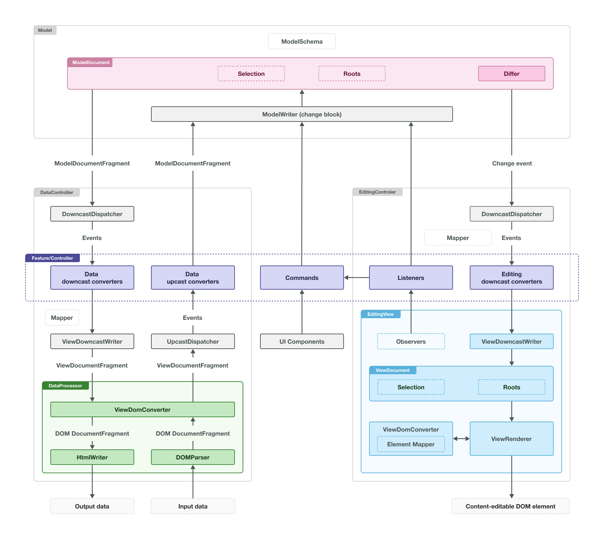

Editing engine
The @ckeditor/ckeditor5-engine package is the largest and most complex part of CKEditor 5. It is built around three layers: the model (the editor’s data), the view (its rendering layer), and the conversion that maps between them.
We recommend using the official CKEditor 5 inspector for development and debugging. It will give you tons of useful information about the state of the editor such as internal data structures, selection, commands, and many more.
The editing engine uses a Model-View-Controller (MVC) architecture. While the engine does not enforce a specific structure, most implementations follow this pattern:

The architecture has three layers: model, controller, and view. There is one model document that gets converted into two separate views: the editing view and the data view. These views represent different things:
- The editing view shows the content users see in the browser and interact with.
- The data view handles the editor’s input and output data in a format the data processor understands.
Both views use virtual DOM structures (custom, DOM-like structures) that converters and features work with. These structures are then rendered to the actual DOM.
The deep blue blocks in the diagram represent code from editor features (plugins). Features control what changes happen to the model, how those changes convert to the view, and how the model updates based on events.
Let’s explore each layer separately.
The model is a DOM-like tree structure consisting of elements and text nodes. Unlike the actual DOM, both elements and text nodes in the model can have attributes.
Like the DOM, the model structure lives inside a document that contains root elements. The model and view can both have multiple roots. The document also holds the selection and the history of its changes.
The document, its schema, and document markers are properties of the Model class. You can access an instance of the Model class through editor.model. Besides holding these properties, the model provides the API for changing the document and its markers.
editor.model; // -> The data model
editor.model.document; // -> The document
editor.model.document.getRoot(); // -> The document's root
editor.model.document.selection; // -> The document's selection
editor.model.schema; // -> The model's schemaYou can only change the document structure, selection, and create elements using the model writer. Access the writer instance in the change() and the enqueueChange() blocks.
// Inserts text "foo" at the selection position
editor.model.change( writer => {
writer.insertText( 'foo', editor.model.document.selection.getFirstPosition() );
} );
// Apply bold to the entire selection
editor.model.change( writer => {
for ( const range of editor.model.document.selection.getRanges() ) {
writer.setAttribute( 'bold', true, range );
}
} );All changes within a single change() block combine into one undo step (added to a single batch). When you nest change() blocks, all changes go to the outermost block’s batch. For example, this code creates a single undo step:
editor.model.change( writer => {
writer.insertText( 'foo', paragraph, 'end' ); // foo
editor.model.change( writer => {
writer.insertText( 'bar', paragraph, 'end' ); // foobar
} );
writer.insertText( 'bom', paragraph, 'end' ); // foobarbom
} );All document structure changes happen through operations. This concept comes from Operational Transformation (OT), a technology that enables collaboration. This approach requires the system to transform every operation by every other operation to determine the result of concurrently applied operations.
However, OT requires a small set of operations and CKEditor 5 uses a non-linear tree model—rather than the flat, array-like models typical in OT. As a result, the set of potential semantic changes is more complex. In CKEditor 5, you organize operations into batches, which act as single undo steps.
Text styles like “bold” and “italic” are stored in the model as text attributes, not as elements (think of them like element attributes). This DOM structure:
<p>
"Foo "
<strong>
"bar"
</strong>
</p>translates to this model structure:
<paragraph>
"Foo " // text node
"bar" // text node with bold=true attribute
</paragraph>This representation of inline text styling significantly reduces the complexity of algorithms working with the model. For instance, with this DOM structure:
<p>
"Foo "
<strong>
"bar"
</strong>
</p>If you have a selection before the letter “b” ("Foo ^bar"), is this position inside or outside <strong>? With native DOM Selection, you could get both positions – one anchored in <p> and another in <strong>. In CKEditor 5, this position translates exactly to "Foo ^bar".
How does CKEditor 5 know that the selection should “be bold” in the case described above? It matters because it determines whether typed text will be bold.
The selection also has attributes. If the selection is at "Foo ^bar" with the attribute bold=true, you know the user will type bold text.
In the previous example, inside <paragraph> there are two text nodes: "Foo " and "bar". If you know how native DOM Ranges work, you might ask: “If the selection is at the boundary of two text nodes, is it anchored in the left one, the right one, or in the containing element?”
It is another problem with DOM APIs. Positions outside and inside some element can be visually identical, and they can be anchored inside or outside a text node (if the position is at a text node boundary). It creates complications when implementing editing algorithms.
To avoid these problems and enable real collaborative editing, CKEditor 5 uses indexes and offsets. Indexes relate to nodes (elements and text nodes) while offsets relate to positions. For example, in this structure:
<paragraph>
"Foo "
<imageInline></imageInline>
"bar"
</paragraph>- The
"Foo "text node is at index0in its parent <imageInline>is at index1"bar"is at index2
Meanwhile, offset x in <paragraph> translates to:
| Offset | Position | Node |
|---|---|---|
0 |
<paragraph>^Foo <imageInline></imageInline>bar</paragraph> |
"Foo " |
1 |
<paragraph>F^oo <imageInline></imageInline>bar</paragraph> |
"Foo " |
4 |
<paragraph>Foo ^<imageInline></imageInline>bar</paragraph> |
<imageInline> |
6 |
<paragraph>Foo <imageInline></imageInline>b^ar</paragraph> |
"bar" |
The engine defines three levels of classes that work with offsets:
- A
ModelPositioninstance contains an array of offsets (which is called a “path”). See thePosition#pathAPI documentation for examples of how paths work. - A
ModelRangecontains two positions: start and end. - Finally, there is the
ModelSelectionclass, which represents a selection in the model. AModelSelectioncan contain one or more ranges, selection attributes, and information about its direction (whether it was made from left to right or right to left). You can create and modify as manyModelSelectioninstances as you need. In addition, a singleModelDocumentSelectioninstance always represents the user’s actual selection in the document. ThisModelDocumentSelectioncan only be changed using the model writer and is automatically kept in sync when the document structure changes.
Markers are a special type of range with these characteristics:
- Managed by
MarkerCollection. - Can only be created and changed through the model writer.
- Can be synchronized over the network with collaborating clients.
- Automatically update when the document structure changes.
- Can be converted to the editing view to display in the editor (as highlights or elements).
- Can be converted converted to the data view to store with the document data.
- Can be loaded with the document data.
Markers are perfect for storing and maintaining additional data related to document portions, such as comments or other users’ selections.
When multiple markers share a position in the model, the downcast dispatcher sorts them into a deterministic order — see Downcasting overlapping markers for the exact rules.
The model’s schema defines several aspects of the model structure:
- Where nodes are allowed or disallowed, for example, a
paragraphis allowed in$root, but not inheading1. - What attributes are allowed for a node, for example, an
imagecan havesrcandaltattributes. - Additional semantics of model nodes, for example, an
imageis of the “object” type and aparagraphis of the “block” type.
The schema can also define specifically disallowed children and attributes. It is useful when nodes inherit properties from other nodes but need to exclude certain things:
- Disallowed nodes in certain places, for example, a custom
specialParagraphelement inherits all properties fromparagraphbut disallowsimageInline. - Disallowed attributes on a node, for example, a custom
specialPurposeHeadingelement inherits attributes fromheading2but does not allow thealignmentattribute.
Features and the engine use this information to make processing decisions. The schema affects:
- What happens with pasted content and what gets filtered out (note: for pasting, conversion is also important. HTML elements and attributes not converted by registered converters are filtered out before becoming model nodes, so the schema does not apply to them).
- Which elements the heading feature can be applied to (which blocks can become headings and which elements are blocks).
- Which elements can be wrapped with a block quote.
- Whether the bold button is enabled when the selection is in a heading (and whether text in the heading can be made bold).
- Where the selection can be placed (only in text nodes and on object elements).
- And more.
By default, editor plugins configure the schema. We recommend that every editor feature come with rules that enable and pre-configure it. It ensures plugin users can enable features without worrying about reconfiguring their schema.
There is no straightforward way to override the schema pre-configured by features. If you want to override default settings when initializing the editor, the best solution is to replace editor.model.schema with a new instance. However, this requires rebuilding the editor.
Access the schema instance at editor.model.schema. For an in-depth guide on using the schema API, see the Schema Deep Dive guide.
Let’s look at the editing engine’s architecture again:
We have discussed the topmost layer – the model. The model layer creates an abstraction over the data. Its format was designed to allow storing and modifying data conveniently while enabling complex features. Most features operate on the model (reading from it and changing it).
The view, on the other hand, is an abstract representation of the DOM structure that should be presented to the user for editing and that should (in most cases) represent the editor’s input and output (the data returned by editor.getData(), data set by editor.setData(), pasted content, etc.).
This means:
- The view is another custom structure.
- It resembles the DOM. While the model’s tree structure only slightly resembled the DOM (for example, by introducing text attributes), the view is much closer. In other words, it is a virtual DOM.
- There are two “pipelines”: the editing pipeline (also called the “editing view”) and the data pipeline (the “data view”). Think of them as two separate views of one model. The editing pipeline renders and handles the DOM that users see and can edit. The data pipeline is used when you call the
editor.getData(),editor.setData(), or paste content into the editor. - The views are rendered to the DOM by the
ViewRenderer, which handles all the quirks required to tamecontentEditableused in the editing pipeline.
The two views are visible in the API:
editor.editing; // The editing pipeline (EditingController)
editor.editing.view; // The editing view's controller
editor.editing.view.document; // The editing view's document
editor.data; // The data pipeline (DataController)The data pipeline does not have a document or a view controller. It operates on detached view structures created for processing data.
The data pipeline is much simpler than the editing pipeline. In the following sections, we’ll discuss the editing view.
Refer to the EditingController's and DataController's API documentation for more details.
The structure of the view closely resembles that of the DOM. While the semantics of HTML are defined by its specification, the view structure is “DTD-free.” To provide additional context and better express content semantics, the view defines six element types (ViewContainerElement, ViewAttributeElement, ViewEmptyElement, ViewRawElement, ViewUIElement, and ViewEditableElement) as well as “custom properties” (custom, non-rendered properties on elements). Editor features provide this additional information, and the ViewRenderer and converters then use it.
The element types are:
- Container element: Elements that build the content structure. Used for block elements like
<p>,<h1>,<blockQuote>,<li>, etc. - Attribute element: Most model text attributes convert to view attribute elements. Used mostly for inline styling elements like
<strong>,<i>,<a>,<code>. The view writer flattens similar attribute elements. For example,<a href="..."><a class="bar">x</a></a>automatically optimizes to<a href="..." class="bar">x</a>. - Empty element: Elements that must not have child nodes, like
<img>. - UI element: Elements that are not part of the “data” but need to be “inlined” in the content. The selection ignores them (jumps over them), as does the view writer in general. The contents and events from these elements are also filtered out.
- Raw element: Elements that work as data containers (“wrappers,” “sandboxes”), but their children are transparent to the editor. Useful to render non-standard data, but the editor should not be concerned with what it is or how it works. Users cannot place the selection inside a raw element, split it into smaller chunks, or modify its content directly.
- Editable element: Elements used as “nested editable elements” of non-editable content fragments. For example, a caption in an image widget, where the
<figure>wrapping the image is not editable (it is a widget) and the<figcaption>inside it is an editable element.
Additionally, you can define custom properties to store information like:
- Whether an element is a widget (added by
toWidget()). - How an element should be marked when a marker highlights it.
- Whether an element belongs to a particular feature – if it is a link, progress bar, caption, etc.
Not all view trees need to (or can) be built with semantic element types. View structures generated directly from input data (for instance, pasted HTML or with editor.setData()) consist only of base element instances. These view structures are (usually) converted to model structures and then converted back to view structures for editing or data retrieval, at which point they become semantic views again.
The additional information in semantic views and the special operations feature developers want to perform on those trees (compared to simple tree operations on non-semantic views) means both structures need to be modified by different tools.
We’ll explain conversion later in this guide. For now, just know that there are semantic views for rendering and data retrieval, and non-semantic views for data input.
Do not change the view manually unless you know exactly what you are doing. If the view needs to change, in most cases the model should change first. Then, the changes you apply to the model are converted to the view by specific converters (see conversion for more details).
Sometimes you have to change the view manually if the model does not reflect the cause of the change. For example, the model does not store information about focus, which is a property of the view. When the focus changes, and you want to represent that in an element’s class, you need to change that class manually.
For that, like in the model, use the change() block (of the view) where you will have access to the view downcast writer.
editor.editing.view.change( writer => {
writer.insert( position, writer.createText( 'foo' ) );
} );There are two view writers:
ViewDowncastWriter– available in thechange()blocks, used during downcasting the model to the view. It operates on a “semantic view,” so a view structure that differentiates between different types of elements (see Element types and custom data).ViewUpcastWriter– a writer to be used when pre-processing the “input” data (for example, pasted content), which usually happens before the conversion (upcasting) to the model. It operates on “non-semantic views”.
Like in the model, there are 3 levels of classes in the view that describe points in the view structure: positions, ranges, and selections.
- A position is a single point in the document.
- A range consists of two positions (start and end).
- A selection consists of one or more ranges with a direction (whether it was made from left to right or right to left).
A view range is similar to its DOM counterpart. View positions are represented by a parent and an offset in that parent. This means, unlike model offsets, view offsets describe:
- Points between child nodes of the position’s parent if it is an element.
- Or points between characters of a text node if the position’s parent is a text node.
Therefore, view offsets work more like model indexes than model offsets.
| Parent | Offset | Position |
|---|---|---|
<p> |
0 |
<p>^Foo<img></img>bar</p> |
<p> |
1 |
<p>Foo^<img></img>bar</p> |
<p> |
2 |
<p>Foo<img></img>^bar</p> |
<img> |
0 |
<p>Foo<img>^</img>bar</p> |
Foo |
1 |
<p>F^oo<img></img>bar</p> |
Foo |
3 |
<p>Foo^<img></img>bar</p> |
As you can see, two of these positions represent what you might consider the same point in the document:
{ parent: paragraphElement, offset: 1 }{ parent: fooTextNode, offset: 3 }
Some browsers (Safari, Chrome, and Opera) consider them identical when used in a selection and often normalize the first position (anchored in an element) to a position anchored in a text node (the second position). Do not be surprised if the view selection is not directly where you expect it to be. The good news is that the CKEditor 5 renderer can tell that two positions are identical and avoids unnecessarily re-rendering the DOM selection.
Sometimes in the documentation, you will find positions marked in HTML with {} and [] characters. The difference is that {} indicates positions anchored in text nodes and [] indicates positions in elements. For instance:
<p>{Foo]<b>Bar</b></p>describes a range that starts in the text node Foo at offset 0 and ends in the <p> element at offset 1.
The inconvenient representation of DOM positions is yet another reason to think about and work with model positions.
To create a safer and more useful abstraction over native DOM events, the view implements the concept of observers. It improves the editor’s testability and simplifies listeners added by editor features by transforming native events into a more useful form.
An observer listens to one or more DOM events, does preliminary processing, and then fires a custom event on the view document. An observer creates an abstraction not only of the event itself, but also of its data. Ideally, an event’s consumer should not have any access to the native DOM.
By default, the view adds these observers:
MutationObserverSelectionObserverFocusObserverKeyObserverFakeSelectionObserverCompositionObserverArrowKeysObserver
Additionally, some features add their own observers. For instance, the clipboard feature adds ClipboardObserver.
For a complete list of events fired by observers, check the ViewDocument's list of events.
You can add your own observer (which should be a subclass of Observer) by using the view.addObserver() method. Check the code of existing observers to learn how to write them.
Since all events are by default fired on ViewDocument, we recommend that third-party packages prefix their events with a project identifier to avoid name collisions. For example, MyApp’s features should fire myApp:keydown instead of keydown.
We have talked about the model and the view as two completely independent subsystems. It is time to connect them. The three main situations where these two layers meet are:
| Conversion name | Description |
|---|---|
| Data upcasting | Loading the data to the editor. First, a DataProcessor processes the data (for example, an HTML string) into a view ViewDocumentFragment. Then, the conversion process turns this view document fragment into a model document fragment. Finally, the editor inserts this content into the model document’s root. |
| Data downcasting | Retrieving the data from the editor. First, the editor converts the content of the model’s root to a view document fragment. Then, a data processor transforms this view document fragment into the target data format. |
| Editing downcasting | Rendering the editor content to the user for editing. This process runs throughout the editor’s lifetime after initialization. First, once data upcasting finishes, the editor converts the model’s root to the view’s root. Afterward, the editor renders this view root to the user inside the editor’s contentEditable DOM element (also called “the editable element”). Whenever the model changes, the editor converts those changes to the view. If necessary (for example, if the DOM differs from the view), the editor re-renders the view to the DOM. |
Let’s look at the diagram of the engine’s MVC architecture and see where each conversion process happens:
Data upcasting is a process that starts in the bottom-left corner of the diagram (in the view layer), passes from the data view through a converter in the controller layer to the model document in the top. As you can see, it goes from bottom to top, hence “upcasting.” Furthermore, it is handled by the data pipeline, hence “data upcasting.” Note that data upcasting is also used to process pasted content (which is similar to loading data).
Data downcasting is the opposite process to data upcasting. It starts at the top and goes down to the bottom-left corner. Again, the conversion process name matches the direction and the pipeline.
Editing downcasting is a bit different from the other two processes:
- It takes place in the “editing pipeline” (the right branch of the diagram).
- It does not have a counterpart. Editing upcasting does not exist because editor features listen to view events, analyze what has happened, and apply necessary changes to the model whenever users perform actions. Therefore, this process does not involve conversion.
- Unlike
DataController(which handles the data pipeline),EditingControllermaintains a single instance of theViewDocumentfor its entire life. Every change in the model is converted to changes in that view, so changes in that view can then be rendered to the DOM (if needed – that is, if the DOM actually differs from the view at this stage).
You can find a more in-depth introduction with examples in the dedicated conversion guide.
For additional information, you can also check out the Implementing a block widget and Implementing an inline widget tutorials.
Once you have learned how to implement editing features, it is time to add a UI for them. You can read about the CKEditor 5 standard UI framework and UI library in the UI library guide.